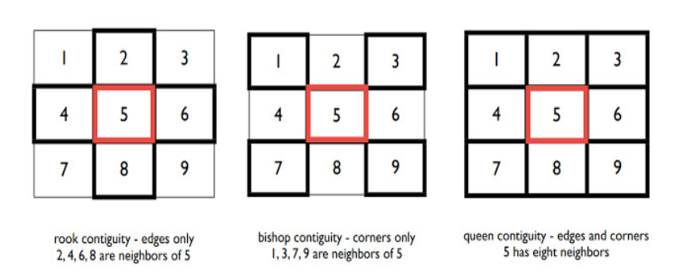

第 1 章 空間思考
1.1 實體地理空間
1.1.1 地理資料模型
1.1.1.1 地理資料模型（geographical data model）
透過電腦來處理實體地理空間，主要分為兩類：
向量資料（vector data） 以點、線、面來處理地理資料。 點：代表地標或者事件發生地點，如商店、學校、竊盜發生地點等等。 線：據線性特徵的事物，如：水文、生物遷徙。 面：獨立且分散，如行政邊界。
網格資料（raster data） 將空間分為許多大小相同的網格，然後在往格中紀錄資料，例如溫度、風速等等，需要的記憶體遠大於向量。
(#fig:vector&raste)vector&raster
圖案來自：Keep Environment Nature’s Blog (https://blog.xuite.net/lwkntu/blog/507588534)
1.1.1.2 物件與場(object & field)
除了客觀的資料，O’Sullivan 與 Unwin 於2010年提出應該加上物件(object)與場域(field)的觀點。
物件 將世界視為一個實體，不再只是一張地圖，大物件中可以含小物件，地如行政區中有學校與公園等等，其中又將物件賦予時間或行為的屬性，例如：南投線的人口流失變化。
場域 網格與向量兩個加起來的進階版，世界是一個連續的表面，存在著不同的數值。例如：海平面高度。而網格只是格子，但場域觀點下以三角形為單位，就是傳說中的「不規則三角形」（triangulated irregular network, TIN），其中包含不同大小與邊長的三角形，適合地理現象複雜的地方，用三角形的方式儲存資料可以減少儲存空間。
(#fig:TIN )TIN不規則三角形示意圖
圖片取自：https://www.osgeo.cn/post/15f1a
但是不只這些，大家都可以發揮想像力去使用不同的地圖表現方式。
1.1.2 屬性資料與測量尺度
- 名目資料（nomial）
- 次序資料（ordinal）
- 區間資料（interval）
- 比例資料（ratio）
1.2 地理空間分析
1.2.1 距離
大部分都是使用歐式距離： \[ d_{ij} = \sqrt{(x_i-x_j)^2+(y_i-y_j)^2} \] 但是距離這方面還是會受到現實面的影響，例如：交通便利性、金錢等等。
1.2.2 鄰近性
以二元（0,1）的方式定義兩物之間的關係，定義其實可以隨人喜歡，可以以實際的距離（台北與桃園為鄰近，台北與高雄不為鄰近）；也可以以有無航線定義，例如松山與桃園機場沒有直飛，因此定義為不鄰近，但是曼谷與桃園有直飛，定義為鄰近（好想出國玩喔！）。
以下有一些較經典（a.k.a 簡單）的定義方式：
Rook Contiguity: 邊界，但是沒有斜對角（角角）。
Bishop Contiguity: 對角線(角角)而已喔！
Queen Contiguity: Rook+Bishop
(#fig:Rook,Bishop,Queen )Contiguity
圖片取自：https://spatiolog.blogspot.com/2019/01/contiguity-based-spatial-weights-matrix.html
1.2.3 矩陣
1.2.3.1 距離矩陣

## 1 2 3 4
## 1 0.00 1.41 1.58 2.24
## 2 1.41 0.00 0.71 2.24
## 3 1.58 0.71 0.00 1.58
## 4 2.24 2.24 1.58 0.00D 為距離矩陣，例如：1到2的距離為1.41、1到3的距離為1.58、1到4的距離為2.24，該矩陣為對稱矩陣。
1.2.3.2 鄰近矩陣
## 1 2 3 4
## 1 * 1 1 0
## 2 1 * 1 0
## 3 1 1 * 1
## 4 0 0 1 *以上矩陣為距離2以內為鄰近，一樣為對稱矩陣
1.2.3.3 鄰近矩陣
## 1 2 3 4
## 1 * 1 1 0
## 2 1 * 1 0
## 3 0 1 * 0
## 4 0 0 1 *該鄰近矩陣表示，距離最近的2個點為鄰近，這個矩陣就不是對稱矩陣。
1.2.3.4 權重矩陣
## 1 2 3 4 列總和
## 1 Inf 0.71 0.63 0.45 1.79
## 2 0.71 Inf 1.41 0.45 2.57
## 3 0.63 1.41 Inf 0.63 2.68
## 4 0.45 0.45 0.63 Inf 1.53權重矩陣為距離的倒數。
調整後的權重矩陣
## 1 2 3 4 列總和
## 1 Inf 0.40 0.35 0.25 1.00
## 2 0.28 Inf 0.55 0.17 1.00
## 3 0.24 0.53 Inf 0.24 1.01
## 4 0.29 0.29 0.41 Inf 0.99調整後的權重矩陣列總和為1。
1.2.4 鄰近多邊形
鄰近多邊形(proximity polygons) 通常稱之為徐昇式多邊形(Thiessen polygons)，利用中垂線的方式劃出多邊形，在多邊形內的每個點距離該物體的距離最近。

(#fig:Thiessen polygones )Contiguity
1.2.5 空間交互作用(spatial interaction)
地理學第一定律，相鄰事物具有相似性，距離遠的事物相異(越進關係越大)。因此空間交互作用會用下列作為權重： \[ w_{ij} \propto \frac{1}{d^k} \] \(w_{ij}\)為\(i、j\) 兩地的交互作用程度，\(d\)為兩地距離，\(k\)為依據離遞減的係數。表示距離越遠，交互作用越小。也可改寫為：
\[ w_{ij} \propto \frac{P_iP_j}{d^k} \] 其中\(P_i、P_j\)為兩地的屬性質，例如：就業率、人口密度等等。
引力模型(Gravity Model)(又稱霍夫模型(Huff Model))為以上的延伸概念，是一種空間互動模式，模型如下：
\[ P_{ij} = \frac{A^{\alpha}_j \times D^{-\beta}_{ij}}{\sum^n_{j =1}A^{\alpha}_j \times D^{-\beta}_{ij}} \] - \(P_{ij}\): \(i\)地的人到\(j\)地商店消費的機率 - \(A_j\): \(j\)地商店的吸引力 - \(D_{ij}}\): \(i、j\)兩地距離 - \(\alpha、\beta\): 實證觀察的係數
1.2.6 空間自相關(spatial autocorrelation)
也稱為空間相依(spatial dependency)，\(i\)地的觀察值會與\(i\)地周圍的觀察值有關，距離越遠相關程度越低，且為造成空間變異(spatial variance)的主要原因之一，例如：一個地區的犯罪率高，會造成鄰近的周圍地區的犯罪率也高。
1.3 注意空間資料的陷阱
1.3.1 地理尺度
可調整面積單元問題(the modifiable areal unit problem, MAUP)即在不同的劃分下，最小的研究單元不同，例如：台灣最小的行政單位為鄰；日本最小的行政單位為町。地理研究可能是很多最小單位的集合，所以不同的集合(或說是畫分)方式就會有不同的結果。通常主要是兩種問題：加總效應(aggregation effect)導致的分區問題；以及空間尺度效應(scale effect) 造成的最小空間尺度問題。
分區問題 不同區域劃分影響觀察值的加總，
 來源：https://www.gislounge.com/modifiable-areal-unit-problem-gis/
來源：https://www.gislounge.com/modifiable-areal-unit-problem-gis/最小空間尺度問題 因為定義不同的最小單位，而導致事件分佈看起來不同。
 來源：https://gisgeography.com/maup-modifiable-areal-unit-problem/
來源：https://gisgeography.com/maup-modifiable-areal-unit-problem/
1.3.2 空間不均與邊緣效應
空間本來就會因為其特質有分布不均的現象，尤其是人文環境與地理分析，例如：銀行搶案集中在人口、銀行較集中的區域，造成群聚的原因就是反映了空間不均。
空間不均衍生了邊緣效應(edge effect)，因為研究區域的選定為人為，一定會有些區域位於邊緣，只有半邊的鄰居，研究區域外的鄰居就被忽略，這個問題要小心面對。